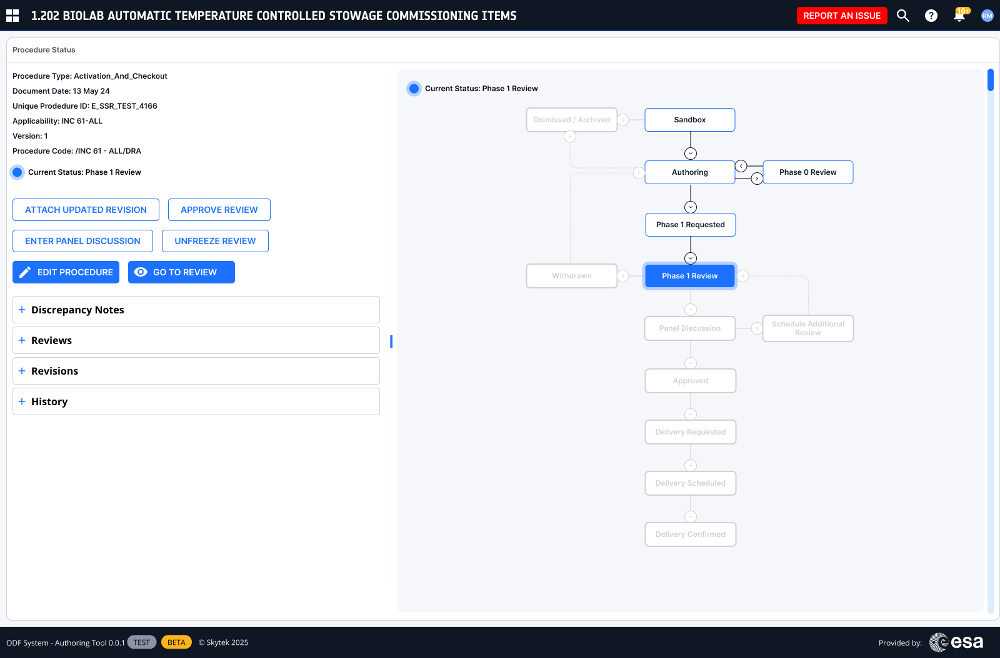

Decision 01
A lifecycle spine, not a navigation menu
Navigation models the maintenance cycle's stages directly, so the interface always answers “where am I and what's next?”. Why: orientation cost was a hidden tax on every switch, encoding the workflow into the structure removes it.

The full lifecycle, with the live state highlighted